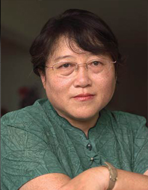

Simone de Beauvoir was a French writer, intellectual, existentialist philosopher, political activist, feminist and social theorist. Though she did not consider herself a philosopher, she had a significant influence on both feminist existentialism and feminist theory.
De Beauvoir wrote novels, essays, biographies, autobiography and monographs on philosophy, politics, and social issues. She was known for her 1949 treatise The Second Sex, a detailed analysis of women's oppression and a foundational tract of contemporary feminism.

Li Yinhe
Often described as ‘China’s first sexologist’, Li Yinhe 李银河 is a sociologist who is widely admired as a pioneer of Gender Studies in mainland China. She is also a public intellectual well known for defending the rights of women, gays, lesbians and transgendered people. She criticizes how the concept of feminism has been demonized in China. Indeed, equality of the sexes has always been the national policy since the establishment of the People’s Republic. In that way, feminism, on the surface an imported idea from the West, is actually in line with what the government wants.
Octavia Estelle Butler
Octavia Estelle Butler was an African-American author of science fiction. A multiple recipient of both the Hugo and Nebula awards, she became in 1995 the first science-fiction writer to receive a MacArthur Fellowship. Her novel Kindred focuses on its value as a forerunner of the neo-slave narrative in African-American literature, and thus the manner in which traces of the past affect the protagonist's present in the novel. She tried to discuss her vision of the future is one in which racism and sexism may well continue to haunt African-American experience a futurist perspective.
Artists
There are three artists of Feminism
Frida Kahlo
Frida Kahlo was a Mexican artist who painted many portraits, self-portraits and works inspired by the nature and artifacts of Mexico. She employed a naïve folk art style to explore questions of identity, postcolonialism, gender, class and race in Mexican society. By the early 1990s, she had become not only a recognized figure in art history, but also regarded as an icon for Chicanos, the feminism movement and the LGBTQ movement. Kahlo's work has been celebrated internationally as emblematic of Mexican national and indigenous traditions and by feminists for what is seen as its uncompromising depiction of the female experience and form.
Rachel Bloom
Rachel Leah Bloom is an American actress, singer, songwriter, and comedian. She wrote and plays the lead role of Rebecca Bunch in The CW comedy-drama series Crazy Ex-Girlfriend, or which she won a Golden Globe Award for Best Actress. This drama may not be the first show to tackle sexism with comedy, but it is one of the few series that does so with joy and tenderness, rather than despair. Rebecca is the crazy ex-girlfriend, to be sure, but she’s also a woman struggling to manage her mental health (and often in denial of those issues herself). It radically reimagines romance altogether, not as a fantasy we pine for, but a world that we ourselves help to create.
Annie Leibovitz
Annie Leibovitz is an American portrait photographer. Annie Leibovitz - famed for her dramatic tableau and strong female gaze - is one of them. She put the first pregnant woman on a magazine cover with her 1991 portrait of a naked Demi Moore. Annie Leibovitz Portraits: 2005-2016 is her distinctive approach to her female subjects that again stands out. Since 1999, Leibovitz has worked on a long-term project called Woman which she created with her late partner Susan Sontag, the writer and essayist behind the seminal 1977 study, On Photography. The project aims to capture intimate portraits of female leaders in politics, sports, business and culture.
Join us
in celebrating inspiring women
About Us
This is a introduction of our group members!
Wenmin Zhang
I'm studying in MA Creavitive and Cultural Entrepreneurship at Goldsmiths, University of London
Zaozao LI
I'm studying in MA Digital media at Goldsmiths, University of London
Alisha
I'm studying in BA Mnagement and Entrepreneurship at Goldsmiths, University of London.